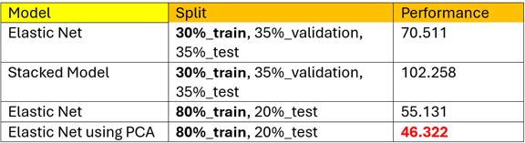

Project I - Time Series
Russell 2000 Index (Time-Series Prediction)
Objective
The primary objective of this project is to develop a robust predictive framework for forecasting the Russell 2000 Index Close Price two days ahead (t+2). By leveraging historical data from multiple U.S. and international market indices, technical indicators, and macroeconomic variables, the model aims to provide actionable insights for investors while avoiding reliance on incomplete intraday data.
Key Benefits:
- Practicality: Predictions for t+2 allow full utilization of finalized daily data (e.g., closing prices, volume) without requiring real-time updates.
- Risk Mitigation: Integration of volume-based trend confirmation reduces false signals in trading strategies (e.g., Golden/Death Cross).
- Scalability: The framework can be extended to other indices or asset classes, e.g. DJI, NASDAQ, NYSE, S&P close.
- Market Insight: Analysis of small-to-mid-cap companies via the Russell 2000 offers a proxy for broader economic health.
- Additional Insight: The exclusion of Russell-specific features to prevent data leakage ensures generalizability and compliance with real-world deployment constraints.
Dataset Overview
Data Source: CNNpred Dataset
The dataset comprises five CSV files (DJI, NASDAQ, NYSE, RUSSELL, S&P 500) from 2010–2017, each containing 1,984 rows × 84 columns.
Key features include:
- Basic Market Data: Date, Close, Volume (Rate of Change).
- Technical Indicators: Momentum (mom, mom1–3), ROC, EMA.
- Macroeconomic Variables: Treasury rates, bond spreads, commodity prices (Oil, Gold), FX rates.
- Company Stock Prices: AAPL, AMZN, MSFT, etc.
- International Indices & Futures: CAC 40, DAX, Nikkei.
Key Variations:
- Index-Specific Futures (e.g., CAC-F in DJI, KOSPI-F in NASDAQ).
- Consistency: Commodity and currency data (e.g., Brent, copper-F) are standardized across files.
Data Limitations:
- Temporal Constraints: Data ends in 2017; newer market regimes (e.g., post-COVID) are unaddressed.
Methodology
Trend Analysis & Trading Strategy
- Golden/Death Cross: 23-day EMA (short-term) and 69-day EMA (long-term) crossovers generate buy/sell signals.
- Volume Validation: High trading volume (ROC) confirms trend legitimacy, reducing false breakouts.
Time-Series Forecasting (HWES)
- Holt-Winters Exponential Smoothing: Model assumes multiplicative trend/seasonality (300-day period). Achieved RMSE = 41.16 but lacks adaptability to sudden market shifts.
Machine Learning for t+2 Prediction
- Feature Selection: P-value Filtering (p < 0.05). & Correlation (>80% with target). & F-regression (top 25 ANOVA F-value features). & Random Forest Importance (tree-based rankings).
- Final Feature Set: Hybrid selection combining technical indicators (e.g., NASDAQ_Close, S&P_EMA_50), macroeconomic variables (DGS10, DTB4WK), and volume metrics.
- Model Selection: ElasticNet with PCA: Outperformed stacked models. and TimeSeriesSplit: Ensured temporal integrity during cross-validation (avg. RMSE = 47.48).
- Critical Additions: Avoiding Data Leakage: Excluded Russell-specific features and enforced time-series splits.
Challenges and Solutions
Project Challenges:
- Predicting stock prices is inherently complex due to the multitude of influencing factors. This project focuses on forecasting the Russell 2000 Index Close Price using data from five major U.S. indices (DJI, NASDAQ, NYSE, S&P 500, RUSSELL). A critical challenge arises from the impracticality of predicting the next day’s close using today’s data, as incomplete or delayed intraday metrics (e.g., finalized closing prices, volume) may not be available before the next trading session.
- Additionally, financial time series like RUSSELL_Close are highly non-stationary , exhibiting volatility clustering and unpredictable shifts driven by external events (e.g., policy changes, geopolitical tensions). The reliance on historical patterns also introduces risks: while models like Holt-Winters Exponential Smoothing (HWES) assume recurring trends and seasonality , real-world markets often deviate from such assumptions, especially during black swan events.
- Furthermore, the dataset’s high dimensionality (84 features across five indices) amplifies noise and multicollinearity , complicating feature selection.
Solutions:
To address these challenges, a dual-method approach was implemented:
1. Holt-Winters Exponential Smoothing (HWES):
- This time-series model was trained on six years of RUSSELL_Close data, assuming a multiplicative trend (trend=’mul’) and multiplicative seasonality (seasonal=’mul’) with a 300-day seasonal period. The model captured cyclical patterns (e.g., annual trends) and achieved an RMSE of 41.16. However, its rigidity in assuming fixed seasonality limits adaptability to sudden market disruptions.
2. Machine Learning Regressors for t+2 Prediction:
- To bypass reliance on incomplete daily data, the target was shifted to RUSSELL_Close_t+2, allowing the use of finalized prior-day metrics. To prevent data leakage , all Russell-specific features were excluded, and predictors were restricted to DJI, NASDAQ, NYSE, and S&P 500 data. A hybrid feature selection strategy combined statistical significance (p-value < 0.05), correlation (>80%), and tree-based importance rankings. The final model, ElasticNet with PCA, reduced RMSE to 46.32 by addressing multicollinearity and overfitting.
- Robust Validation: Time-series splits replaced random K-fold to avoid future data leakage.
This dual methodology balances theoretical assumptions ( HWES seasonality) with empirical adaptability ( machine learning), offering a pragmatic framework for financial forecasting.
Technical Highlights
Key Techniques
- Exponential Moving Average(EMA) Crossovers
- Holt-Winters Exponential Smoothing (HWES)
- ElasticNet Regression
- Stacked Model
- Principal Component Analysis (PCA)
Model Performance
- Root Mean Squared Error (RMSE): 46.322
- R² : 0.832
Trading Strategy based on Golden Cross and Volume(RoC)

Figure 1. RUSSELL 2000 Trading Strategy
The strategy is based on the Moving Average Crossover:
Buy Signal (Golden Cross): When the short-term EMA (ema23) crosses above the long-term EMA (ema69), it indicates strengthening upward momentum. Traders interpret this as a bullish trend starting.
Sell Signal (Death Cross): When the short-term EMA crosses below the long-term EMA, it signals weakening momentum and a potential bearish trend.
Volume acts as a "truth-teller" for price movements, reducing false signals, because it reflects market participation, and validates price movements. Therefore, considering RUSSELL_Volume(RoC) improves accuracy.
(method 1)By using Holt-Winters Exponential Smoothing (HWES) model to forecast the future values of the RUSSELL_Close index
Figure 2. HWES Model
This time-series model was trained on six years of RUSSELL_Close data, assuming a multiplicative trend (trend=’mul’) and multiplicative seasonality (seasonal=’mul’) with a 300-day seasonal period. The model captured cyclical patterns (e.g., annual trends) and achieved an RMSE of 41.16. However, its rigidity in assuming fixed seasonality limits adaptability to sudden market disruptions.
(method 2)ElasticNet Regressor for t+2 Prediction: Plotting the Predictions vs. Actual RUSSELL_Close values on a 45-degree line
Figure 3. 2017 RUSSELL 2000 - Close Price
Next, We predict RUSSELL_Close value by using ElasticNet Regressor (the target was shifted to RUSSELL_Close_t+2), and we apply PCA to the final selected model and features to perform one last round of dimensionality reduction and compare the RMSE. Since ElasticNet using PCA achieves better performance (RMSE: 46.322), we select ElasticNet with PCA as our final model for predicting RUSSELL_Close_t+2.
After utilizing 80% of the data (i.e. 2010 to 2016) to train the model, we proceeded to validate its performance by making predictions on the subsequent 20% of the data (i.e. 2017). To assess the accuracy of these predictions, we plotted the predicted vs. actual values of RUSSELL_Close_t+2, comparing them against the 45-degree dashed reference line, which represents an ideal scenario where predictions perfectly match the actual values. Upon examining the plot, we observed that the predicted values closely align with this reference line, indicating that the model effectively captures the underlying trend in the data and demonstrates strong predictive performance.
How to Interpret a Prediction vs. Actual Plot on a 45-Degree Line?
The X-axis represents the actual values (true outcomes).
The Y-axis represents the predicted values (model's output).
A dotted 45-degree diagonal line represents perfect predictions, meaning that if all points lie exactly on this line, the model's predictions are 100% accurate.
Overestimation: Most points are above the line → Model predicts too high.
Underestimation: Most points are below the line → Model predicts too low.
Weak Model Performance: The points are widely scattered, far from the 45-degree line.
Figure 4. Final Feature Set
How to select features?
To ensure an optimal feature set for the predictive model, multiple feature selection techniques were employed. These methods included P-value Filtering, where features with a p-value less than 0.05 were retained; Correlation Analysis, selecting variables with an absolute correlation greater than 80% with the target; F-regression, which prioritized the top 25 features based on ANOVA F-values; and Random Forest Importance, a tree-based ranking approach to identify the most influential predictors.
The features that appeared consistently across these methods were selected as the initial set. To further refine the model, different feature group combinations were tested, evaluating their performance based on the lowest Root Mean Square Error (RMSE).
The final feature set was a hybrid selection incorporating key technical indicators (e.g., NASDAQ_Close, S&P_EMA_50), macroeconomic variables (e.g., DGS10, DTB4WK), and volume metrics, ensuring a balanced mix of market trends, economic conditions, and liquidity measures. A complete list of selected variables is presented in Figure 4.
Figure 5. Stacked Model RMSE versus Base models
Figure 6. Model Evaluation
Model Evaluation
After determining the significant features, the next step is to decide which model provides the best predictive performance. We first evaluated the performance of six different models: ElasticNet, SVR, DecisionTreeRegressor, AdaBoostRegressor, RandomForestRegressor, and ExtraTreesRegressor. Then, we use a Stacked Model to combine these six models and compare their RMSE. We find that ElasticNet has a lower RMSE than the Stacked Model, so we chose ElasticNet, as shown in Figure 5.
Next, we apply PCA to the final selected model and features to perform one last round of dimensionality reduction and compare the RMSE. Since ElasticNet using PCA achieves better performance (RMSE: 46.322), we select ElasticNet with PCA as our final model for predicting RUSSELL_Close_t+2, as shown in Figure 6.